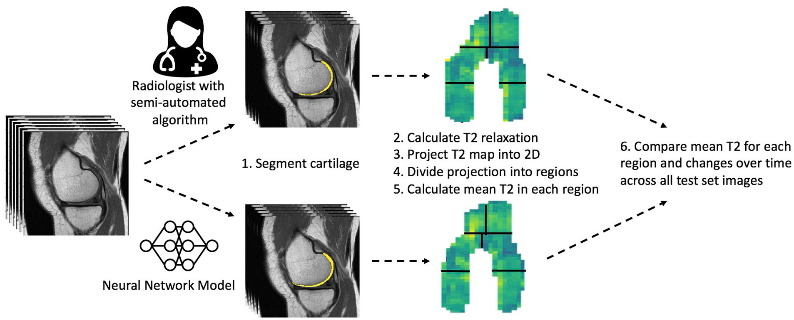
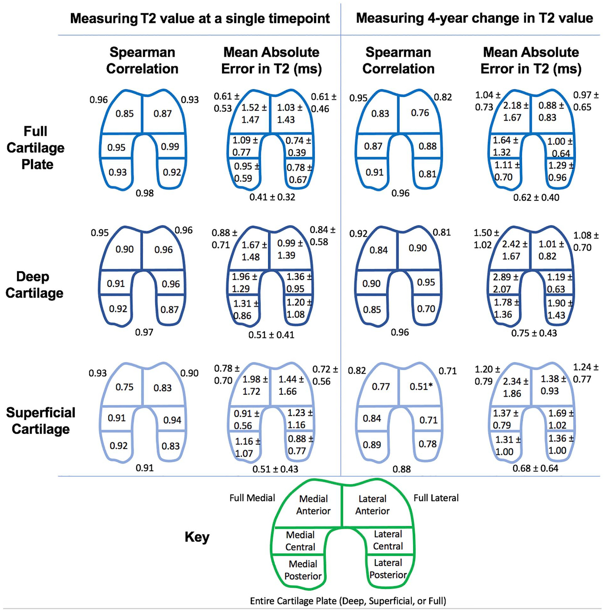

使用定量T2松弛测量法和深度学习自动评估膝关节软骨退化的开源软件
0. Abstract: A fast, automated femoral cartilage segmentation model for measuring T2 relaxation values and longitudinal changes is proposed and open-sourced. Its assessments of cartilage health agreed with an expert as closely as experts agreed with one another.
1. Introduction: Novel quantitative magnetic resonance imaging(qMRI) techniques can detect early changes in cartilage matrix composition, enabling earlier measurement and intervention, while typical X-rays can only detect and assess visible changes. It's principle is to map multi-echo spin-echo(MESE) T2-weighted MRIs to T2 relaxation time. First of all, we need to segment cartilage in MRI scans quickly and automatically. Instead of using structural sequences and imperfect registration as previous studies did, this work aims to segment MESE images directly: MESE MRI->T2-based cartilage health and disease progression at expert level.
2. Methods: After receiving the MRI, a musculoskeletal radiologist will segment the cartilage, and the segmentation is ground truth. We will train a CNN model from it and test examine model's segmentation on a test set(Fig 1. yellow line). After mapping and standardizing the segmented cartilage to a plane with 12 subregions, we calculate the average T2 value and 4-year change in T2 value in each subregion under both expert's and CNN's segmentations(Fig 2.). At last, we'll compare areas of increased T2 both approaches give.  
3. Results: Training the model takes approximately 1 day. Evaluating with the model takes several seconds. By comparing segmentation masks using Dice score and jaccard index, the model agrees better with readers than readers agree with each other. Comparison of subregional T2 mean values and longitudinal subregional T2 change give promising results. The percentage of cartilage area estimated using model segmentations agree well with expert's.
4. Discussion: The proposed model exceeds all previous models, and is close to the limit of reproducibility for measuring regional T2 values. The author also made the code publicly available for further comparison.
5. My Question: "but 12 of 14 subjects had a 4-year change larger than their model’s MAE 2.16 ms"--I think it should be "smaller", not "larger".